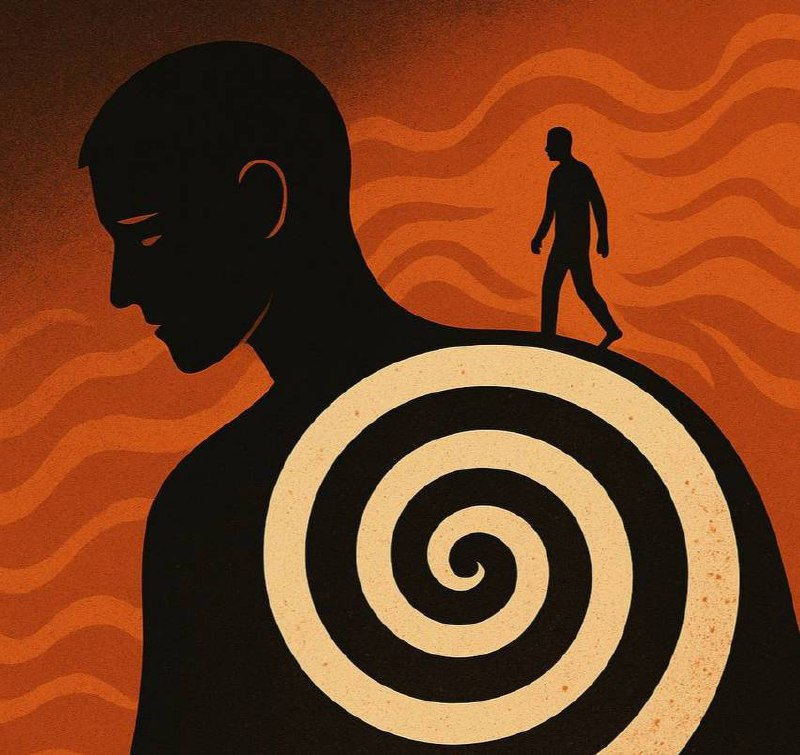

«Инсон шахсига чуқур шўнғиманг — чўкиб кетасиз».

Бу гап аввал қарашда огоҳлантиришдек туюлади. Аслида эса у инсон руҳияти ҳақидаги энг оғир ҳақиқатни ифодалайди. Чунки инсон — бир вақтнинг ўзида нур ҳам, соя ҳам. Унда умид бор, аммо ҳасад ҳам бор. Меҳр бор, аммо нафс ҳам бор, ўзини бир тарафлама оқлаш ҳам бор. Агар сиз бир одамни фақат чуқур таҳлил қилиш, уни “тўлиқ тушуниш”, ҳар бир ҳаракатининг туб сабабини кавлаш билан банд бўлсангиз — бир пайт келиб ўзингизни йўқотасиз.
Психологияда бунга яқин ҳолат бор: чегараларни йўқотиш. Бошқани ҳаддан ортиқ тушуниш — ўзингни унутириш билан тугайди. Сиз унинг болалигига кириб борасиз, қўрқувларини оқлайсиз, хатоларини сабаблар билан безайсиз. Охир-оқибат, ёмонни ҳам “тушунарли”, ноҳақликни ҳам “табиий” деб қабул қила бошлайсиз. Шу ерда инсон ахлоқий маёқидан айрилади.
Фалсафий жиҳатдан эса, бу ерда янада чуқур қатлам бор. Инсон қалби — тубсиз уммон. Уммонга шўнғиш учун эса ё набот, ё нажот керак. Ҳар ким ҳам бу уммондан соғ чиқолмайди. Айниқса, агар сиз ўзингизда мустаҳкам устунга эга бўлмасангиз.
Бу ерда яширин, аммо кучли маъно бор:
Инсоннинг ички оламини тўлиқ билиш — инсоннинг иши эмас. Қалблар — бизга эмас, Яратувчига ошкора. Инсон зоҳир билан масъул. Ниятлар ва ички қоронғулик эса — бошқа бир ҳикмат доирасида. Шунинг учун ҳам ҳаддан ортиқ ковлаш эмас, адолатли масофа сақлаш буюрилган.
Ҳар кимни тўлиқ “тушуниш” шарт эмас. Айрим ҳолларда тўғри муносабат — чегара қўйишдир. Чегара — бефарқлик эмас, ҳикматдир. Сиз бировни қутқариш учун эмас, ўзингизни йўқотмаслик учун тўхтайсиз. Бу қочиш эмас, онгли танлов. Психологлар юмушини касб қилманг!
— Ҳар инсонни чуқур таҳлил қилиш шарт эмас.
— Ҳамма дардни сиз даволашингиз керак эмас.
— Ҳар қалбга киришга уриниш — ўз қалбингизга хиёнат бўлиши мумкин.
Ўзингизни сақлаш — худбинлик эмас. Бу масъулият.
Инсонни ҳурмат қилинг, лекин унинг уммонига ўзингизни ташламанг.
Чунки ҳар кимнинг чуқурлиги бор — ва ҳар чуқурлик нажот эмас.